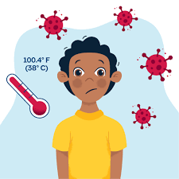

Cómo tratar el dengue de manera efectiva
1. Descanso adecuado
El reposo es fundamental para el tratamiento del dengue. Permitir que el cuerpo recupere fuerzas acelera la recuperación y disminuye el riesgo de complicaciones. Evita el esfuerzo físico y asegúrate de dormir lo suficiente para mantenerte hidratado y fuerte.
.jpg)
2. Hidratación constante
El dengue puede causar deshidratación debido a la fiebre, el sudor y los vómitos. Es crucial ingerir líquidos como agua, jugos naturales y soluciones de rehidratación oral para evitar complicaciones. No esperes a tener sed para beber.
3. Control de la fiebre
Para reducir la fiebre alta, puedes tomar medicamentos como paracetamol. Es importante evitar el uso de ibuprofeno o aspirina, ya que estos pueden empeorar los síntomas. Consulta a un médico antes de tomar cualquier medicamento.

4. Monitoreo de signos de alarma
Es importante observar cualquier signo de alerta como sangrados, dolor abdominal intenso, o dificultad para respirar. Si experimentas alguno de estos síntomas, acude inmediatamente a un centro médico. Estos pueden indicar que la enfermedad se ha vuelto más grave.